SỞ GIÁO DỤC VÀ ĐÀO TẠO NGHỆ AN • UBND XÃ HỮU KIỆM
MỘT SỐ BIỆN PHÁP ĐƯA DÂN CA, DÂN VŨ DÂN TỘC THÁI VÀO DẠY HỌC MÔN ÂM NHẠC
Nhằm bảo tồn văn hóa và tăng hứng thú học tập cho học sinh tại Trường PTDTBT THCS Hữu Kiệm
🌺 Tác giả & Giá trị Cốt lõi của Sáng kiến
- • Tác giả: Cô giáo Vi Thị Nhung – Giáo viên Âm nhạc, Trường PTDTBT THCS Hữu Kiệm, xã Hữu Kiệm, tỉnh Nghệ An.
- • Hồn cốt Truyền thống giữ nguyên: Khai thác các làn điệu Khắp, Lăm, Nhuôn, Xuối, Ứ noọng và nghệ thuật gõ Khắc luống (Típ luống), Múa Xòe khăn piêu, Nhảy sạp, Khèn bè Thái tại bản Na Chảo, bản Na Lượng (Di tích cấp tỉnh Đền Pu Nhạ Thầu).
- • Chiều sâu Khoa học (GitHub & 3D): Tích hợp ký âm Ngũ cung vector SVG (
VexFlow/abcjs), thuật toán đo cao độYIN Pitch Detection f₀, bộ chấm điểm gõ nhịpOnset Δt (ms)và không gianThree.js 3Dchạy 100% Offline. - • Hiệu quả thực nghiệm (N = 120 HS): Mức độ hứng thú đạt 93,3% (+51,6%), kỹ năng gõ nhịp Khắc luống & dân vũ đạt 84,2% (+55,0%).
💡 Sử dụng phím mũi tên ◀ ▶ trên bàn phím hoặc nút điều hướng phía trên để trình chiếu các Slide hiệu ứng động!
PHẦN I. ĐẶT VẤN ĐỀ & KHÔNG GIAN DI SẢN
Không gian Văn hóa Thái Xã Hữu Kiệm & Thực tế sau Sáp nhập Trường
Kết nối di sản bản Na Chảo, Na Lượng (Đền Pu Nhạ Thầu), Xốp Thặp với Trường PTDTBT THCS Hữu Kiệm
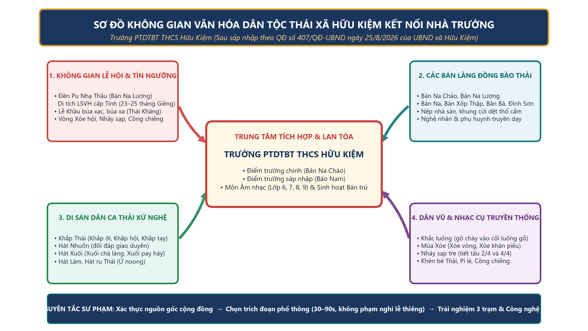
1. Đặc thù Trường PTDTBT THCS Hữu Kiệm (2026–2027)
- • Thành lập theo QĐ số 407/QĐ-UBND ngày 25/8/2026 trên cơ sở sáp nhập PTDTBT THCS Hữu Kiệm và PTDTBT THCS Bảo Nam.
- • Học sinh đa dân tộc (Thái, Khơ Mú, H'Mông) cùng học tập, sinh hoạt bán trú; cần phương pháp trực quan để mọi dân tộc đều dễ hòa nhập.
2. Hồn cốt Di sản Thái tại Bản làng Hữu Kiệm
- • Lễ hội Đền Pu Nhạ Thầu (bản Na Lượng): Rộn rã tiếng chày Khắc luống (Típ luống) nhịp 2/4 và Vòng Xòe khăn piêu.
- • Khảo sát đầu vào (N=120 HS): Chỉ 34,2% nhận diện đúng đặc trưng làn điệu/nhạc cụ và 29,2% gõ đúng tiết tấu Khắc luống.
PHẦN II. CHIỀU SÂU KHOA HỌC (GITHUB OPEN-SOURCE STACK)
Ứng dụng Khoa học Âm nhạc Mã nguồn mở GitHub Giữ gìn Hồn cốt Ngũ cung Thái
Kết hợp VexFlow/abcjs · YIN Pitch Detection · Meyda/Essentia Onset · Three.js 3D WebGL
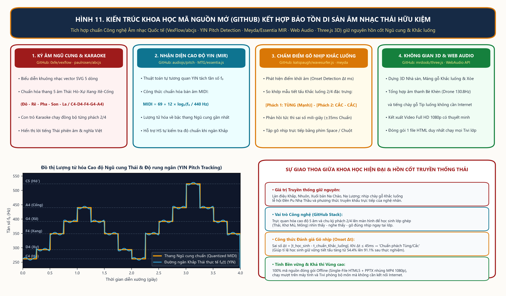
CƠ SỞ ÂM HỌC DÂN TỘC
Cấu trúc Thang 5 âm (Ngũ cung Thái) & Mã hóa Tiết tấu Khắc luống – Nhảy sạp
Chuyển hóa tiếng chày gỗ Tùng – Cắc thành bài tập Body Percussion vừa sức học sinh THCS
🎼 Công thức & Cấu trúc Âm nhạc Thái
- • Thang 5 âm (Ngũ cung Thái):
Đô (Hò) – Rê (Xự) – Pha (Xang) – Son (Xê) – La (Cống)tương ứng tần số chuẩn261,6Hz – 293,7Hz – 349,2Hz – 392,0Hz – 440,0Hz. - • Lượng tử hóa Cao độ YIN:
MIDI = 69 + 12 × log₂(f₀ / 440)giúp nhận diện chính xác bước nhảy quãng 4 đúng của điệu Khắp, Nhuôn. - • Mã hóa Khắc luống (Nhịp 2/4): Phách 1 âm trầm TÙNG (gõ lòng luống = Vỗ hai tay vào đùi); Phách 2 âm đanh CẮC – CẮC (gõ thành luống = Vỗ tay cao / thanh phách).
- • Chu kỳ Nhảy sạp:
Mở (Tùng) – Mở (Cắc) – Khép (Cắc!).
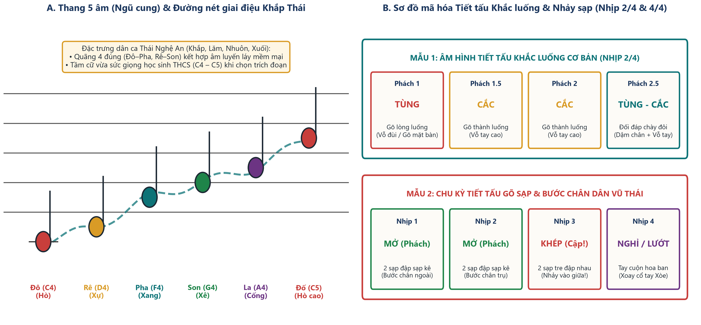
PHẦN III. HỆ THỐNG 5 BIỆN PHÁP LIÊN HOÀN
Quy trình 5 Biện pháp Sư phạm & Thiết kế “Hồ sơ Di sản 1 trang” (QR)
Xác thực nguồn gốc kép từ nghệ nhân bản làng Hữu Kiệm và tư liệu Viện Âm nhạc
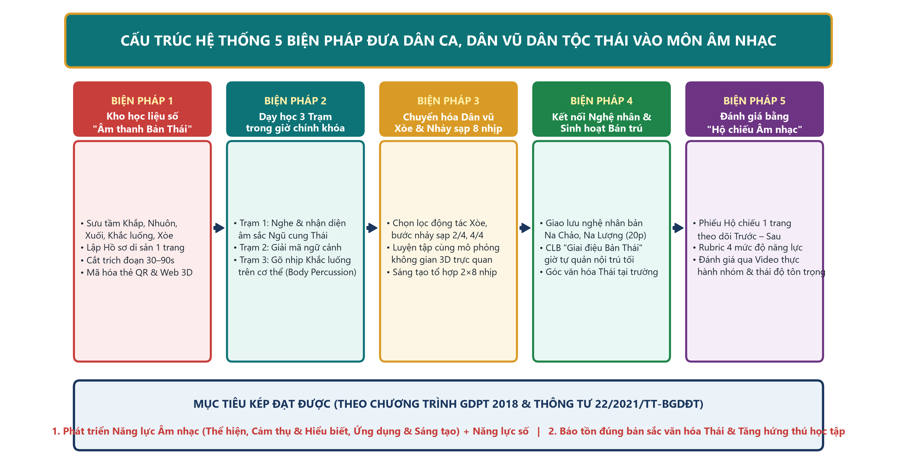
Chuỗi khép kín: Nguồn xác thực → Hồ sơ di sản 1 trang → Học 3 Trạm & Lab 3D → CLB Bán trú → Hộ chiếu Âm nhạc.
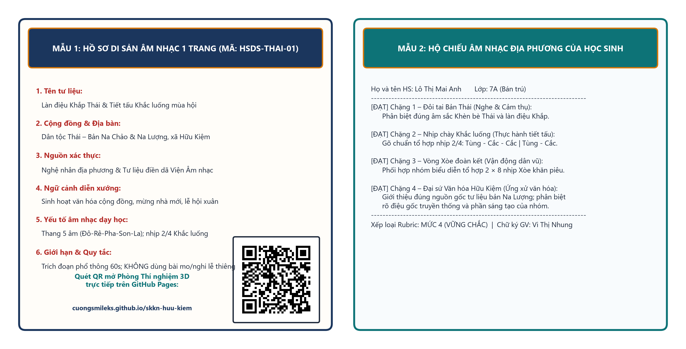
Bộ 08 Hồ sơ di sản 1 trang: Ghi rõ bản làng xuất xứ, ngữ cảnh lễ hội và quy tắc tôn trọng di sản.
NĂNG LỰC SỐ (NLS + AI) 2026–2027 & TRÒ CHƠI THEO 3 NĂNG LỰC CỐT LÕI
Trò chơi Giải Ô Chữ “Mật mã Di sản Thái”, Luyện thanh Ngũ cung & Body Percussion 5 tầng
Tích hợp mã chỉ báo NLS 1.1 – 4.2, kỹ thuật Đọc nhạc bàn tay Kodály, Bộ gõ cơ thể Orff-Schulwerk & Đặt lời mới
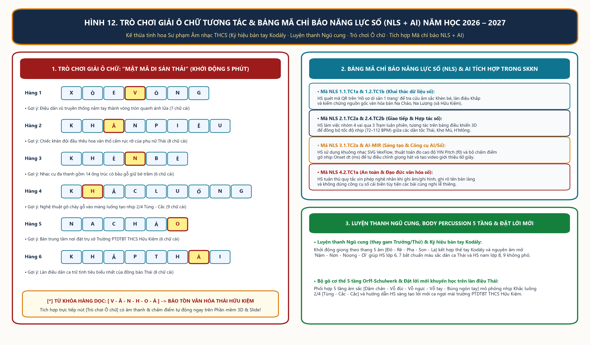
BIỆN PHÁP 2 & BIỆN PHÁP 3
Mô hình Lớp học “3 Trạm Luân phiên” & Thực hành Tổ hợp 2 × 8 Nhịp
100% học sinh các dân tộc Thái, Khơ Mú, H'Mông được phân vai trải nghiệm đa giác quan
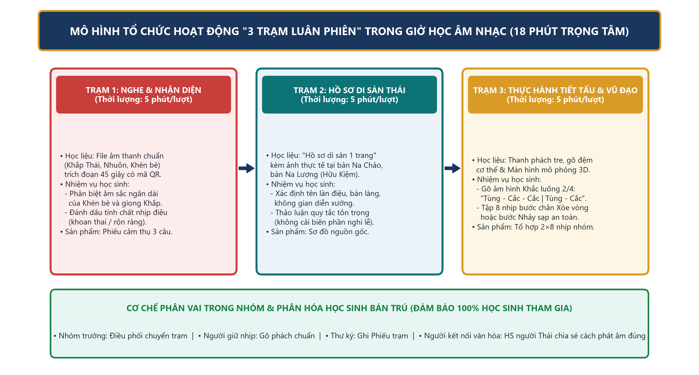
Tổ chức 3 Trạm trong 18 phút trọng tâm
- • Trạm 1 (5p): Nghe cảm thụ Ngũ cung & âm sắc Khèn bè qua mã QR.
- • Trạm 2 (5p): Giải mã Hồ sơ di sản bản Na Chảo, Lễ hội Đền Pu Nhạ Thầu.
- • Trạm 3 (5p): Gõ nhịp Khắc luống Body Percussion & bước Xòe 2×8 nhịp.
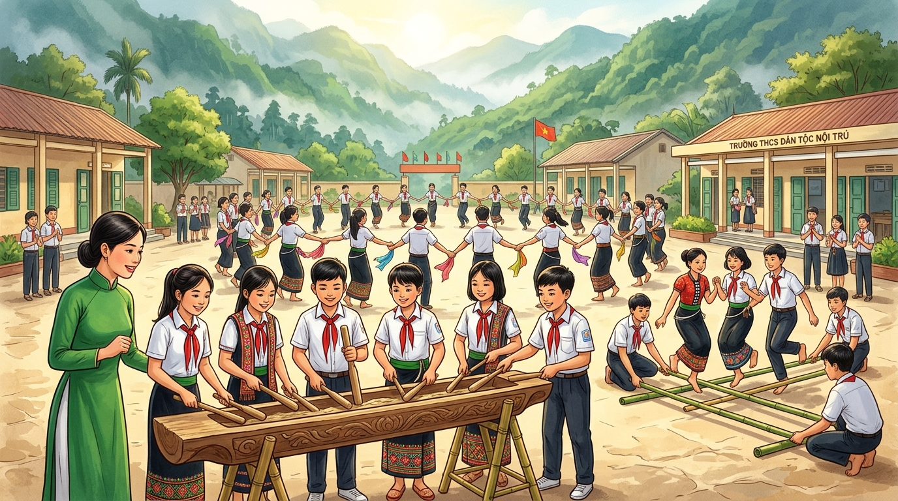
Tập từ Tempo chậm (72 BPM) đến chuẩn (96 BPM)
- • Học sinh quan sát mô phỏng 3D và khuông nhạc VexFlow để bắt đúng phách mạnh (Tùng) trước khi ghép vòng Xòe khăn piêu và Nhảy sạp.
BIỆN PHÁP 4. ĐẶC THÙ TRƯỜNG BÁN TRÚ VÙNG CAO
Kết nối Nghệ nhân Bản Na Chảo, Na Lượng & CLB “Giai điệu Bản Thái”
Truyền lửa trực tiếp từ nghệ nhân dân gian đến giờ tự quản buổi tối tại khu nội trú
1. Giao lưu “Nghệ nhân bản em” tại sân trường
- • Nghệ nhân dân gian bản Thái trực tiếp giới thiệu cấu tạo 14 ống trúc của chiếc Khèn bè Thái, thổi bè trầm giữ nhịp cho học sinh thực hành Nhảy sạp.
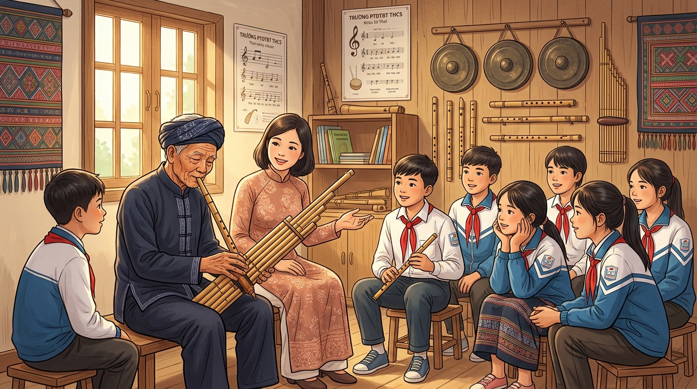
2. CLB “Giai điệu Bản Thái” tối thứ Năm (25 phút)
- • Học sinh người Thái làm hạt nhân hướng dẫn các bạn dân tộc Khơ Mú, H'Mông từ điểm trường Bảo Nam sáp nhập về cùng múa Xòe, gõ Khắc luống.
TRẢI NGHIỆM TRỰC TIẾP ỨNG DỤNG 3D & GITHUB MIR NGAY TRÊN SLIDE
Phòng Thí nghiệm 3D Dân ca & Dân vũ Thái + Khuông nhạc SVG & Chấm điểm Gõ nhịp
Tương tác xoay 360°, bấm nốt nhạc Ngũ cung và nhấn phím Space để chấm điểm gõ nhịp Khắc luống
VIDEO THỰC TIỄN FULL HD 1080P KÈM THEO HỒ SƠ NỘP SỞ
Video 3D Thuyết minh Sáng kiến Kinh nghiệm & Bảng Kiểm duyệt 6 Phân cảnh
Tích hợp giọng đọc thuyết minh tiếng Việt, nhạc nền Ngũ cung Thái Auto-Ducking (-16 LUFS) & phụ đề
🎬 Phát trực tiếp Video 3D Thuyết minh (1080p)
Bấm nút Play (▶) để nghe thuyết minh toàn bộ 3 trạm trải nghiệm văn hóa Thái.
🖼️ Bảng Kiểm duyệt 6 Phân cảnh 3D (QA Sheet)
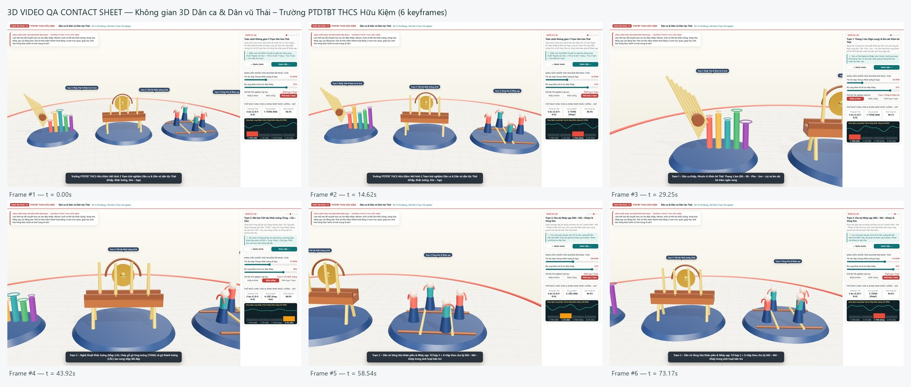
PHẦN IV & V. KẾT QUẢ THỰC NGHIỆM & KẾT LUẬN
Hiệu quả Thực nghiệm Đối chứng Trước – Sau (N = 120 HS) & Khả năng Nhân rộng
Tăng trưởng từ +51,6% đến +55,0% trên cả 4 tiêu chí năng lực âm nhạc và thái độ tôn trọng di sản
📈 Kết quả Kiểm chứng trên 120 Học sinh
- • TC1 (Nhận diện đặc trưng): Tăng từ
34,2%lên 87,5% (+53,3%). - • TC2 (Hứng thú tham gia): Tăng từ
41,7%lên 93,3% (+51,6%). - • TC3 (Thực hành Khắc luống & Xòe, Sạp): Tăng từ
29,2%lên 84,2% (+55,0%). - • TC4 (Tôn trọng di sản bản làng): Tăng từ
36,7%lên 91,7% (+55,0%). - • Giá trị bền vững: Giữ nguyên vẹn hồn cốt truyền thống Thái xã Hữu Kiệm, đồng thời nâng tầm bài học bằng công nghệ mã nguồn mở GitHub & 3D Offline.
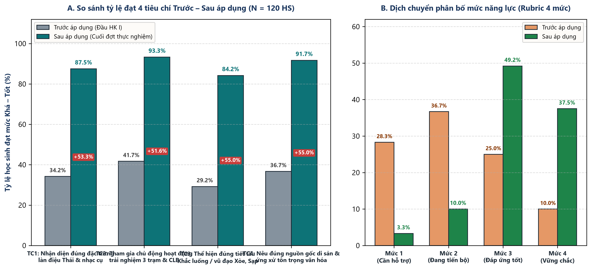